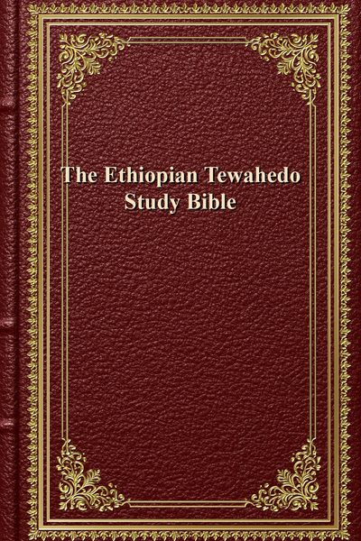

The Ethiopian Tewahedo Study Bible
The deepest free Bible apparatus — the full 87-book Ethiopian canon, including 1 Enoch, Jubilees, Meqabyan and more, with cross-references and a variant apparatus.
The Ethiopian Tewahedo Study Bible — Download EPUB · 24 MB